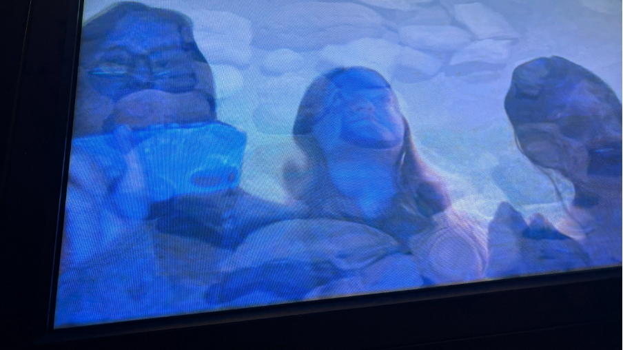

During my visit to the Electric Dreams exhibition at Tate Modern in London, I encountered an interactive installation that deeply impressed me both technically and emotionally. The work combines real-time video capture, projection feedback, and a touch-controlled interface to create an immersive experience of deep engagement.

The installation features a large electronic screen at its core, responsive to viewers’ touch operations. As I slid my finger across the screen, visual effects resembling water ripples emerged, as if I were stirring a pool of virtual water. Simultaneously, a camera positioned in front of the installation captured my image in real time, projecting myself and the surrounding environment onto the screen. These visuals were processed into flowing, distorted forms, immersing me in a watery illusion and integrating me as part of the visual composition.
What struck me most was its encouragement of not just visual observation, but physical and emotional engagement. Here, viewers act as both observers and creators: when touching the screen, I was both watching and being watched altering the imagery while becoming part of it. The “ripple” metaphor carried poetic depth: every action or interaction leaves visible traces in the world.
This resonates with core concepts in human-computer interaction (HCI), particularly embodied interaction and feedback loops. The installation establishes an intuitive, direct link between system outputs (ripples and visual distortions) and user inputs (touch gestures). This immediate feedback is both playful and profound, prompting reflections on self-presentation and digital mediation what does it mean to see ourselves not in clear form, but as fluid, shifting avatars?
Reflection
This experience has inspired me to wonder whether similar design principles could be integrated into future AR/VR projects: creating a poetic and responsive interactive approach through real-time input, self-reflection, and environmental transformation. Such installations have long exceeded the scope of functionality, evolving into an emotional, sensory, and even philosophical medium.